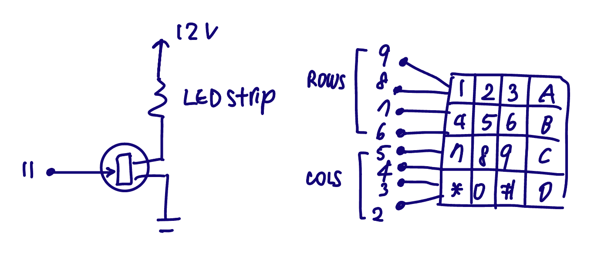
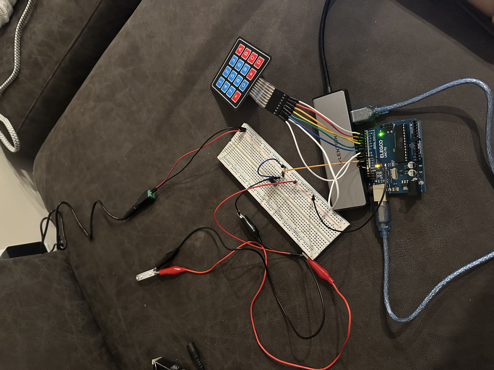
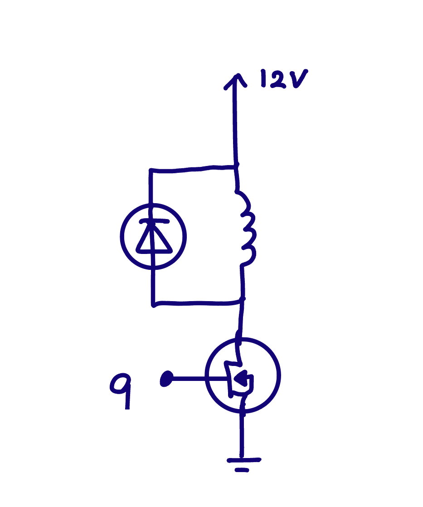
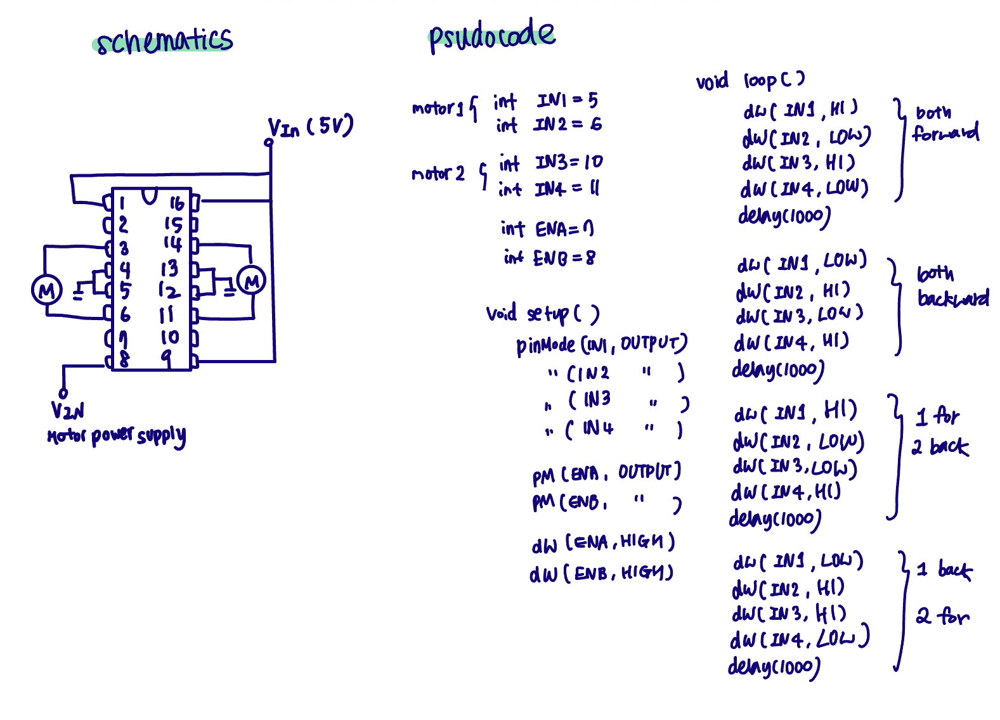

Sue Jo's Assignment 5: High(er) voltage and transitors!
OVERVIEW
This assignment asks you to create a circuit that uses an N-MOSFET to control a high load device powered by an external supply. The project must use analogWrite() and an input sensor that uses a library.
SCHEMATIC

For this assignment, I used a 12V LED strip as the high load output device and a 4x4 keypad (using the Keypad library) as the input sensor. The LED strip requires an external 12V power supply.
I used only one branch of the LED strip, which has three white LEDs in seris and a 180Ω resistor. Each white LED as an approximate forward voltage drop of 3.4V, so three LEDs drop about 10.2V total. With a 12V supply, the remaining voltage across the resistor is approximately 1.8V. Using Ohm's Law, the current is 1.8V/180Ω = 10mA. Although this is below the Arduino I/O pin's 40mA maximum limit, the strip operates at 12V which exceeds the Ardino's 5V logic level. So an N-MOSFET is used to separate the 12V load power from the 5V logic power. The keypad is directly connected to the Arduino's digital pins since it functions as a low power switch matrix.
The N-MOSFET used in this design (IRLZ44N) has an absolute max drain current rating of approximately 47A according to its datasheet. In this circuit, only one LED brance is used (0.01A), so the transistor operates well within its safe current limits.
CIRCUIT
I made a prototype that where pressing different number keys (or row groups) on a 4x4 keypad changes the brightness of a high load LED using PWM. Pressing the numbers on the first row sets the LED to the lowest brightness, the second row sets it to medium brightness, the third row sets it to the hightest, and the last row turns the light off.

Circuit operation (Image) Circuit operation (GIF)
ARDUINO
#include <Keypad.h>
// define the number of rows and cols in the keypad
const byte ROWS = 4;
const byte COLS = 4;
// define the key layout corresponding to the keypad buttons
char keys[ROWS][COLS] = {
{'1','2','3','A'},
{'4','5','6','B'},
{'7','8','9','C'},
{'*','0','#','D'}
};
// define which arduino pins are connected to the keypad row pins and column pins
byte rowPins[ROWS] = {9,8,7,6}; // Arduino pins connected to Row1-Row4
byte colPins[COLS] = {5,4,3,2}; // Arduino pins connected to Col1-Col4
// Initialize an instance of the Keypad class
Keypad keypad = Keypad(makeKeymap(keys), rowPins, colPins, ROWS, COLS);
// define the PWM pin
int ledPin = 11;
void setup() {
pinMode(ledPin, OUTPUT); // sest the LED control pin as an output
Serial.begin(9600); // start serial communication
}
void loop() {
char key = keypad.getKey(); // read the currently pressed key from the keypad
if(key){ // check if a key is pressed
// print the value of the pressed key
Serial.print("Pressed: ");
Serial.println(key);
if(key == '1' || key == '2' || key == '3'){ // if key is 1-3
analogWrite(ledPin, 64); // set LED brightness to 64
}else if(key == '4' || key == '5' || key == '6'){ // if key is 4-6
analogWrite(ledPin, 128); // set LED brightness to 128
}else if(key == '7' || key == '8' || key == '9'){ // if key is 7-9
analogWrite(ledPin, 225); // set LED brightness to 225
}else if(key == '*' || key == '0' || key == '#'){ // if key is *, 0, or #
analogWrite(ledPin, 0); // turn off LED strip
}
}
}
ADDITIONAL QUESTIONS
1: These are the datasheets for the n-mosfet transistor: DMT6009LCT, IRLZ44N, P30N06LE. Read the text on your mosfet to see which one you have. For your mosfet, what is the absolute maximum amount of current between pins 2 and 3?
My mosfet is IRLZ44N, and from the datasheet, the absolute maximum continuous drain current between pin 2 and 3 is 47A at 25℃.
2: Draw a schematic for a circuit with using at least your arduino, a DC motor, and a flyback diode. Find parts with datasheets you could use for each of these schematic components.

For this schematic, a 12V brushed DC motor is used as an example to match a 12V external power supply. The motor is controlled using an IRLZ44N N-MOSFET, and a flyback diode (1N4007) is placed in parallel with the motor (cathode to +12V). The Arduino ground and the external power supply ground are connected as a common reference.
3: Here is the datasheet for the L293D chip: https://www.ti.com/product/L293D. Draw a schematic using at least your arduino, this chip, and two motors. Write (pseudo) code that shows how you would move the motors both forward, both back, then one forward one back, and one back then forward.

4: Did you use AI tools in completing this assignment? If yes, please provide details on how/when, as well as a brief reflection. If you used an LLM, please 'share' your conversation and include it as part of your submission, or cite the prompt(s) you used and the output. If no, you can either leave this question blank, or provide other information if you'd like.
Yes, I first used it to ask which sensors / high load output device would be the most easiest to use, but I didn't like the Chat GPT's pick so I just went with my decision. After that, I also used chat for debugging when my keypad was returning incorrect values when I press the buttons.